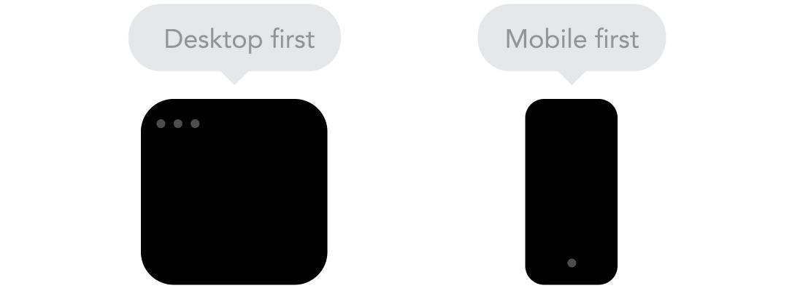
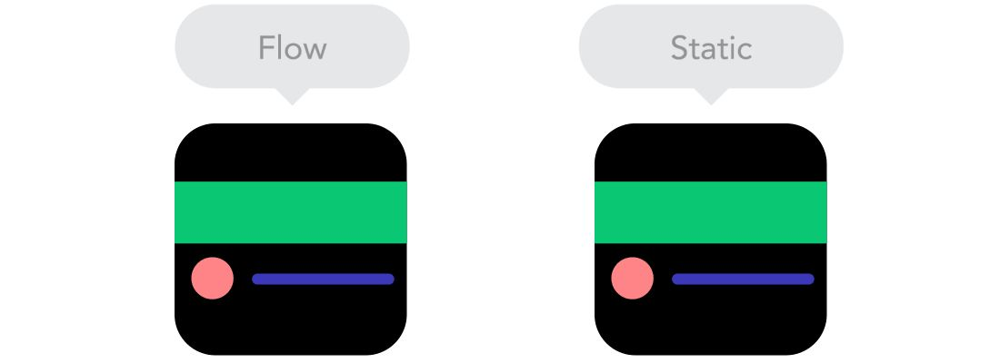
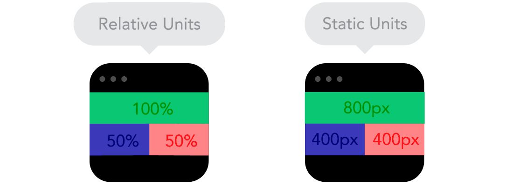
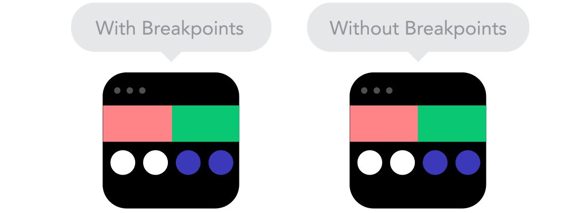
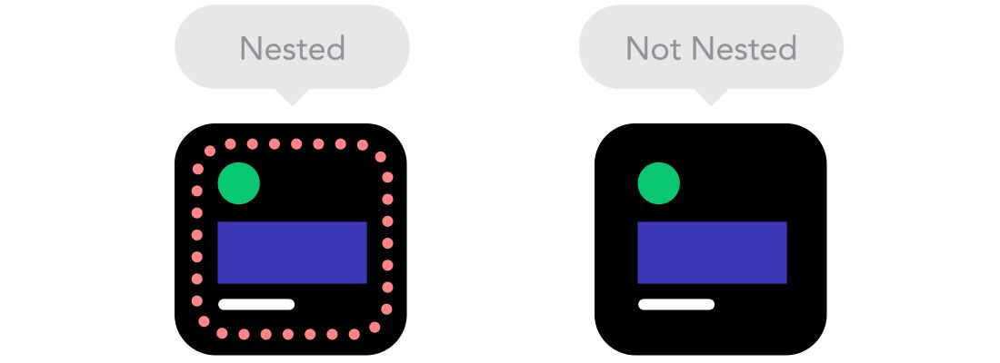

同一套設計稿，在手機、平板、桌機上都要撐得住——版面模式 × 斷點策略 × 表格與圖片規劃 × Figma 實作
RWD 概念
手機：單欄，全部垂直堆疊
平板：主欄 + 一個側欄
桌機：三欄 + 頁尾
版面設計模式
| 模式 | 怎麼變化 | 示範 |
|---|---|---|
| Mostly Fluid 局部流動 | 寬螢幕側邊加留白，縮小時欄位逐步垂直堆疊 | 查看 ↗ |
| Column Drop 欄位下移 | 螢幕縮小時，最右側欄位依序移到下方 | 查看 ↗ |
| Layout Shifter 區塊轉換 | 不同尺寸下整體區塊的位置與順序大幅改變 | 查看 ↗ |
| Tiny Tweaks 細微調整 | 版面結構不變，只微調字級、間距與圖片尺寸 | 查看 ↗ |
| Off Canvas 超出畫布 | 次要內容（如側邊欄）預設藏在畫布外，手動觸發才顯示 | 查看 ↗ |
斷點設置規劃
斷點設置策略

max-width。Mobile First：手機 → 平板 → 桌機，用 min-width。多數團隊兩端都會看過，但 Mobile First 的空間限制通常逼出更精準的決策。表格設置規劃
| 策略 | 做法 |
|---|---|
| 隱藏欄位 | 小螢幕隱藏次要欄位，只留核心資訊。適合欄位有明顯主次之分的表 |
| 水平捲動 | 保持完整 Table 結構，讓容器可左右滑動，資料不刪減 |
| CSS／DIV 排版 | 把 Table 結構轉成 Flexbox／Grid，自己控制每格的排版與尺寸 |
| 破壞表格排版 | 行動端把每一列重排成獨立卡片，欄名用 data attribute 附加 |
響應式圖片規劃
| 做法 | 解決什麼 |
|---|---|
| 圖片裁切 | 用 <picture> 依裝置顯示不同焦點的裁切版本，手機看特寫、桌機看全圖 |
| 等比縮小 | 設 max-width: 100%，圖片隨容器自動縮放，不超出邊界 |
| 減少請求數 | 合併圖檔、改用 CSS Sprite 或 SVG Icon，降低 HTTP request |
| 背景圖換圖 | 用 Media Query 在不同斷點切換背景圖，手機不用下載不必要的大圖 |
| 背景圖裁切 | background-size: cover 配 background-position 控制焦點 |
| 整張換圖 | 不同斷點用完全不同的圖（橫幅 vs 直幅），構圖跟著改 |
概念比較
| 比較 | RWD 響應式 | AWD 自適應 |
|---|---|---|
| 運作方式 | 同一套 CSS，依 viewport 流動調整 | 偵測裝置類型，載入對應版本 |
| 版面切換 | 平滑漸進，沒有跳動感 | 需要切換時間，可能閃一下 |
| 維護成本 | 單一版本，維護簡單 | 多套版本，成本較高 |
| 客製化程度 | 較難針對特定裝置大幅客製 | 可為每個裝置做最佳化體驗 |
| 適用情境 | 大多數網站的首選 | 對效能要求極高的大型產品 |
核心概念 · Flow

核心概念 · Units

width: 100%; max-width: 1200px——填滿螢幕但不超過版心寬度。核心概念 · Breakpoints

核心概念 · Components

position: relative，子元素相對容器定位，不會被整體版面牽著跑。原則沒變：icon、按鈕最小點擊區域用 px；欄寬、圖片最大寬度、全幅 banner 用 %。字型與圖示選用
Figma 應用
參考資源
本堂小結